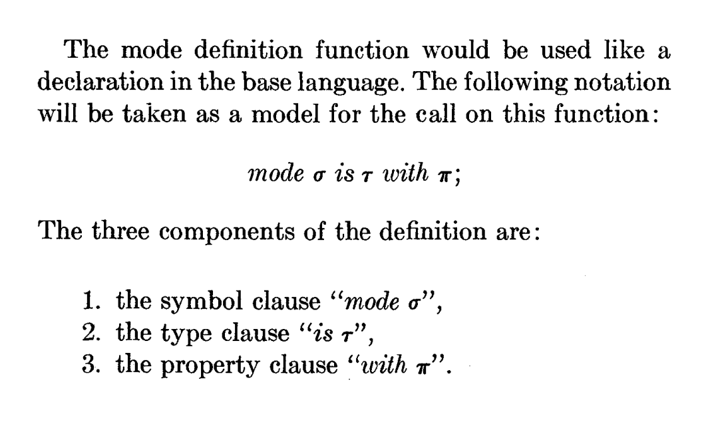
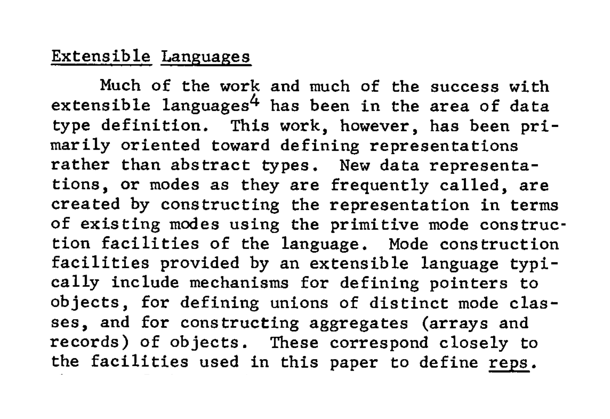
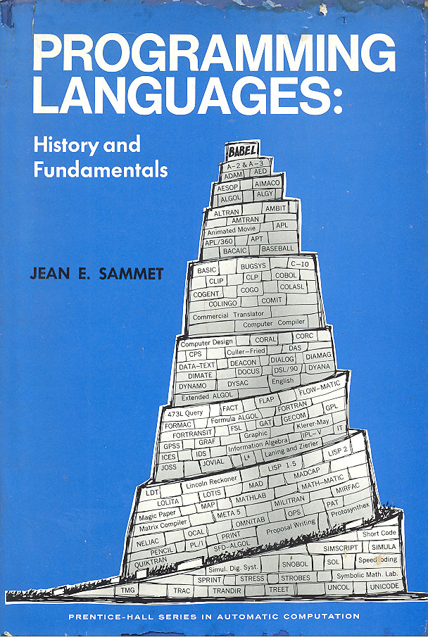
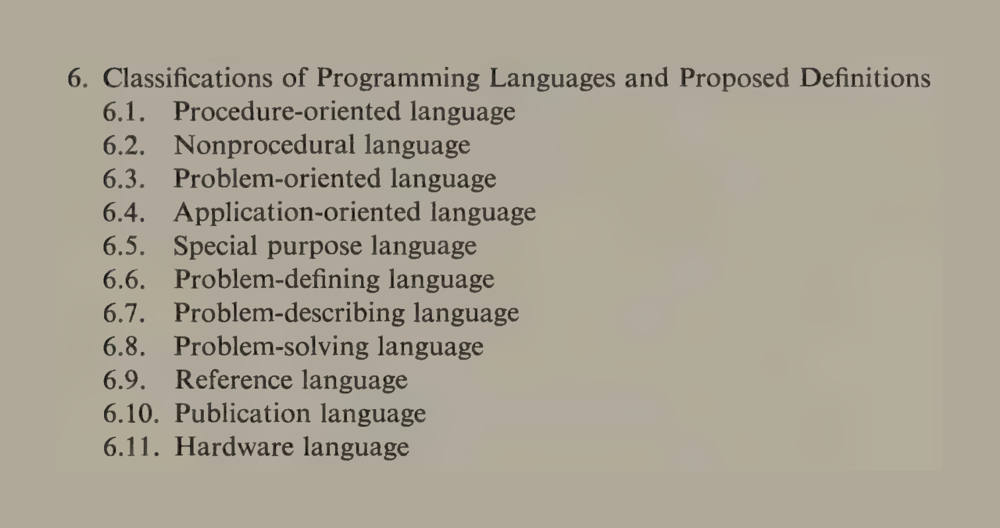
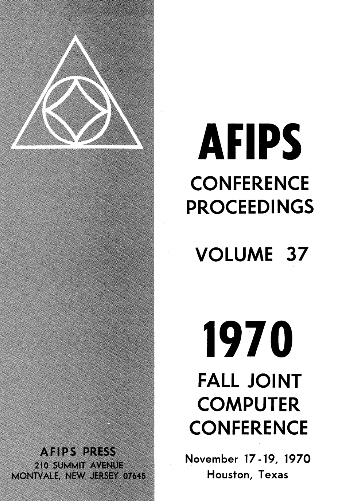
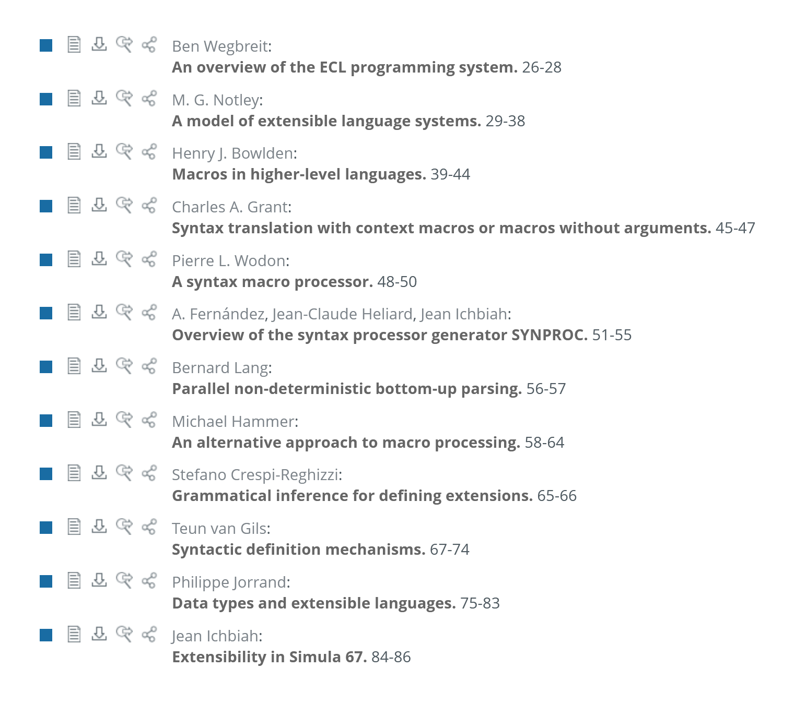
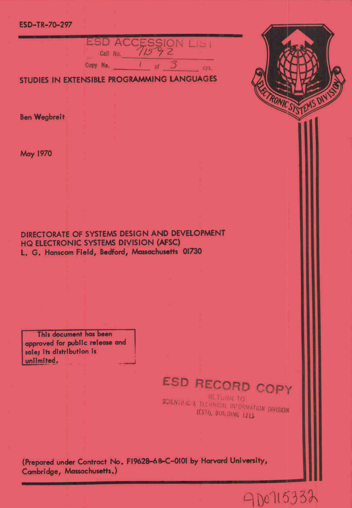
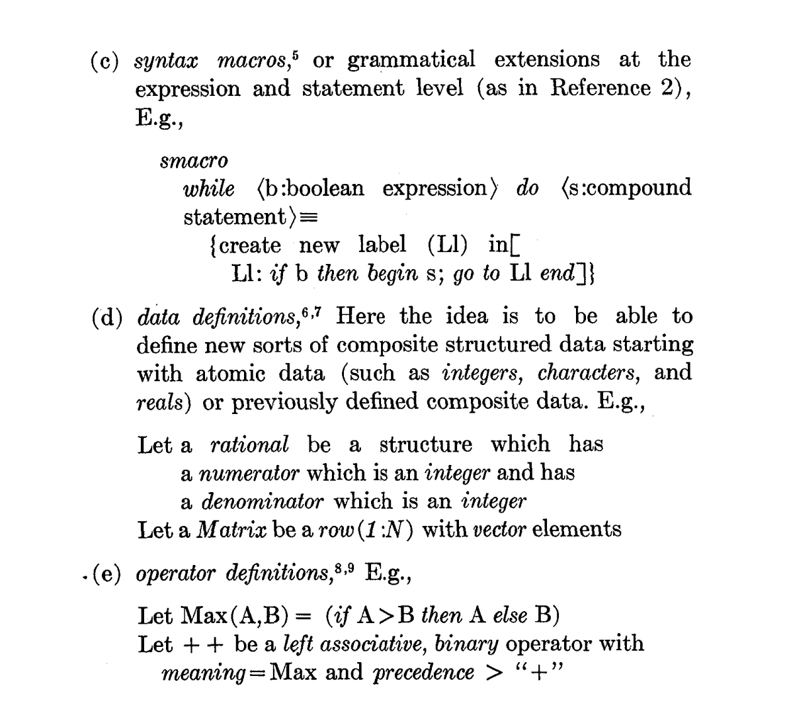
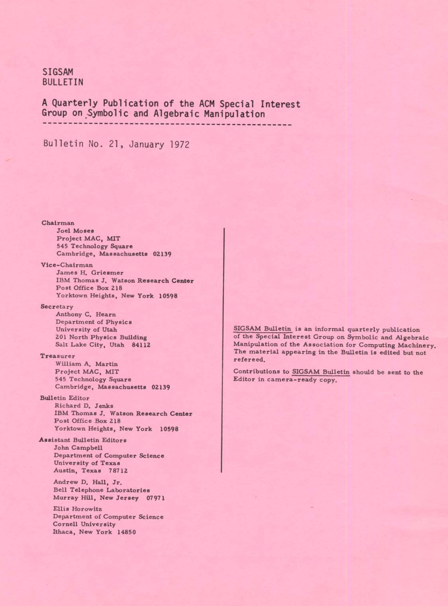

The rise and fall of extensible programming languages
Tomas Petricek, Charles University, Prague

Entry points
Where do you encounter them?
Adding data types to Algol

Algol 58/60
- A beautiful mathematical achievement
- Influential in theory, but not real use
- Lacked data types (records) of COBOL
Algol 68
- Adds "data types" known as "modes"
- Primitive modes (int, bytes, sema, file, format, ...)
- Declarations (structures, arrays, references, ...)

Semantic extensibility
"The objects involved in the processing of a program are divided into classes, each characterized by a mode."
"The principal component of the semantic extension mechanism is a function which permits the definition of new modes."

Abstract data types in Clu
Language developed by Liskov in mid-1970s
Data definitions in "extensible languages" related to "abstract data types".
The early history of Smalltalk
Conference in 1969
[In 1969] there was a conference on Extensible Languages in which almost every famous name in the field attended.
Work on extensible languages
The debate was great and weighty—it was a religious war of unimplemented poorly thought out ideas. (...) But it was all talk—no one had done anything yet.

Programming Languages: History and Fundamentals
Influential book published in 1969

Programming Languages: History and Fundamentals
Influential book published in 1969
No extensible programming languages in the
table of contents!
A brief history of the field
-
Working Conference on Extensible Languages
Talks on data types, PPL, held at CMU (1968) -
Extensible Languages Symposium
Every famous name attended - held in Boston (1969) -
International Symposium on Extensible Languages
Still a somewhat random program! - In Grenoble (1971) -
Extensibility in programming language design
"Most prefer to buy rather than build" (AFIPS'75)
Vision
The vision and the reality

Chairman's intro (1969)
The ultimate [objective] is simple and attractive. A single universal programming system [that] includes a base language & a meta-language.
A program [consists of], statements in the meta-language which expand (...) the base
language, [followed by a program in the
derived language.]

An appealing idea
Definition mechanisms in extensible languages (1970)
One simple premise underlies the proposals: that a "user" should be capable of modifying the definition of that language, in order to define for himself the particular language which corresponds tb his needs.
Every famous name attended
Alan Perlis introduction (1969)
Discovery of something new in programming languages has somewhat the same sequence of emotions as falling in love.
Sharp elation followed by euphoria, a feeling of uniqueness, and ultimately the wandering eye (the urge to generalize).
I hope that Extensible Languages will have a
long enough appeal for us in this rapidly changing
world that we can draw from its juices.

Extensible languages (1971)
Macros and parsing
New look at languages like Simula 67, Algol N
Critical reflections
and failure reports
4 papers on the ECL programming system
Extensibility in ECL
Syntactic extension
Specification of new syntactic forms
Data type extension
Define new information structures
Operator extension
Add operations to new & existing types
Control extension
Coordination of asynchronous processes

Extension techniques review (1975)
Paraphrase in terms of something known
Orthophrase adding orthogonal feature by "processor surgery"
Metaphrase altering interpretation of an existing thing
Reflections
What happened to extensible languages
Reflections on extensible languages
Cheatham (1971)
There are clearly many at this conference who feel that we are still not there (...). I do not share this opinion. Rather, I think that in a very strong sense "we have arrived".
Standish (1975)
The belief that "we could make it possible for unsophisticated users to manufacture personalized languages (...) with great ease" was "probably a bit overambitious."
Reflections
What works and what does not?
- Do-it-yourself kit philosophy
- Easily reached extensions (types, operations)
- Hard extensions requiring system surgery
- Most prefer to buy rather than to build
Extensible languages today?
-
Defining new data types & operations
Standard feature of all languages -
Customizing syntax via macros
Available in some languages, but dangerous -
Redefinition of existing structures
Exists in very specialized contexts (monads) -
Extensible languages as such
LISP and an occasional revival of the vision
Conclusions
Extensible programming languages
Conclusions
Why extensible languages never caught up?
- Custom languages is a very appealing vision!
- Conceptually coherent, not technically coherent?
- Lost to abstract data types & object-orientation?
Tomas Petricek, Charles University, Prague
References